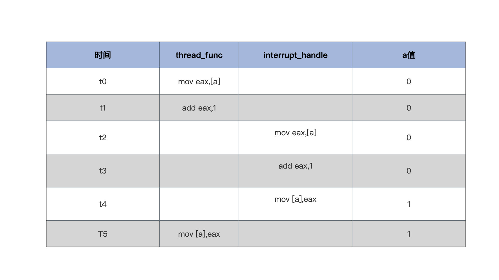
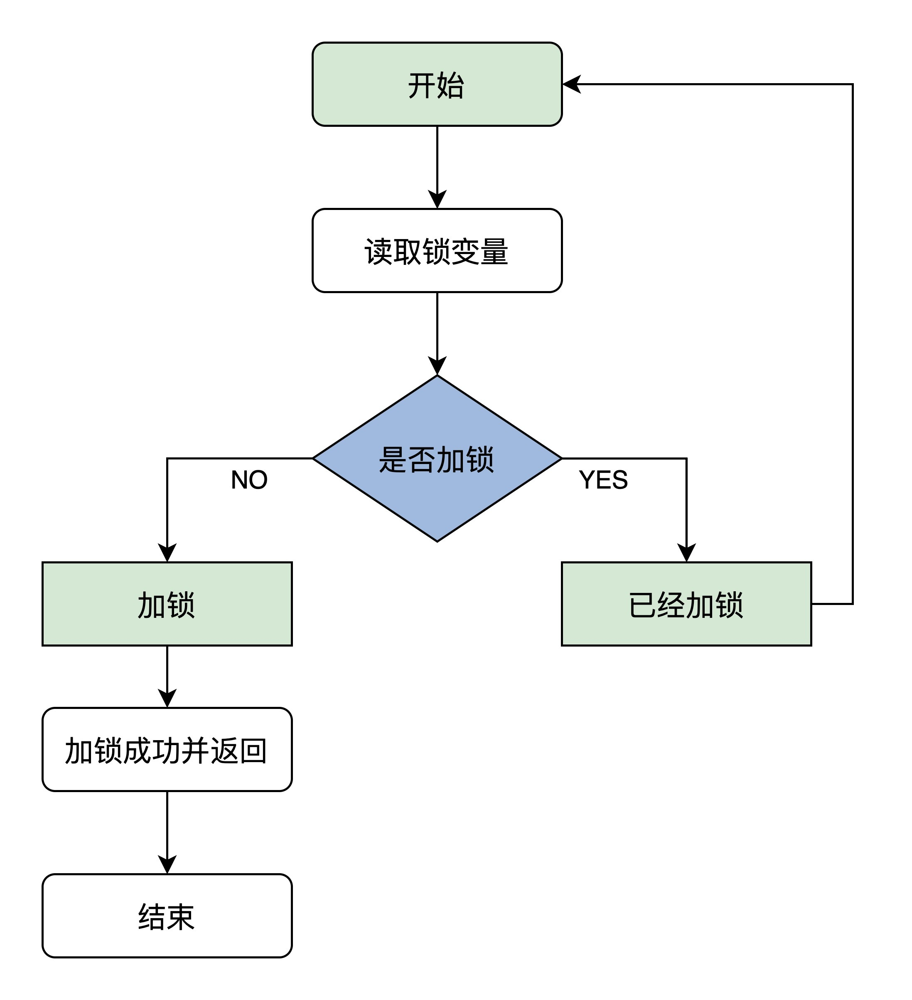

- 00 开篇词 为什么要学写一个操作系统？.md
- 00 编辑手记 升级认知，迭代自己的操作系统.md
- 01 程序的运行过程：从代码到机器运行.md
- 02 几行汇编几行C：实现一个最简单的内核.md
- 03 黑盒之中有什么：内核结构与设计.md
- 04 震撼的Linux全景图：业界成熟的内核架构长什么样？.md
- 05 CPU工作模式：执行程序的三种模式.md
- 06 虚幻与真实：程序中的地址如何转换？.md
- 07 Cache与内存：程序放在哪儿？.md
- 08 锁：并发操作中，解决数据同步的四种方法.md
- 09 瞧一瞧Linux：Linux的自旋锁和信号量如何实现？.md
- 10 设置工作模式与环境（上）：建立计算机.md
- 11 设置工作模式与环境（中）：建造二级引导器.md
- 12 设置工作模式与环境（下）：探查和收集信息.md
- 13 第一个C函数：如何实现板级初始化？.md
- 14 Linux初始化（上）：GRUB与vmlinuz的结构.md
- 15 Linux初始化（下）：从_start到第一个进程.md
- 16 划分土地（上）：如何划分与组织内存？.md
- 17 划分土地（中）：如何实现内存页面初始化？.md
- 18 划分土地（下）：如何实现内存页的分配与释放？.md
- 19 土地不能浪费：如何管理内存对象？.md
- 20 土地需求扩大与保障：如何表示虚拟内存？.md
- 21 土地需求扩大与保障：如何分配和释放虚拟内存？.md
- 22 瞧一瞧Linux：伙伴系统如何分配内存？.md
- 23 瞧一瞧Linux：SLAB如何分配内存？.md
- 24 活动的描述：到底什么是进程？.md
- 25 多个活动要安排（上）：多进程如何调度？.md
- 26 多个活动要安排（下）：如何实现进程的等待与唤醒机制？.md
- 27 瞧一瞧Linux：Linux如何实现进程与进程调度_.md
- 28 部门分类：如何表示设备类型与设备驱动？.md
- 29 部门建立：如何在内核中注册设备？.md
- 30 部门响应：设备如何处理内核I_O包？.md
- 31 瞧一瞧Linux：如何获取所有设备信息？.md
- 32 仓库结构：如何组织文件_.md
- 33 仓库划分：文件系统的格式化操作.md
- 34 仓库管理：如何实现文件的六大基本操作？.md
- 35 瞧一瞧Linux：虚拟文件系统如何管理文件？.md
- 36 从URL到网卡：如何全局观察网络数据流动？.md
- 37 从内核到应用：网络数据在内核中如何流转.md
- 38 从单排到团战：详解操作系统的宏观网络架构.md
- 39 瞧一瞧Linux：详解socket实现与网络编程接口.md
- 40 瞧一瞧Linux：详解socket的接口实现.md
- 41 服务接口：如何搭建沟通桥梁？.md
- 42 瞧一瞧Linux：如何实现系统API？.md
- 43 虚拟机内核：KVM是什么？.md
- 44 容器：如何理解容器的实现机制？.md
- 45 ARM新宠：苹果的M1芯片因何而快？.md
- 46 AArch64体系：ARM最新编程架构模型剖析.md
- LMOS来信：第二季课程带你“手撕”计算机基础.md
- 大咖助场 以无法为有法，以无限为有限.md
- 用户故事 yiyang：我的上机实验“爬坑指南”.md
- 用户故事 成为面向“知识库”的工程师.md
- 用户故事 技术人如何做选择，路才越走越宽？.md
- 用户故事 操作系统发烧友：看不懂？因为你没动手.md
- 用户故事 用好动态调试，助力课程学习.md
- 用户故事 艾同学：路虽远，行则将至.md
- 结束语 生活可以一地鸡毛，但操作系统却是心中的光.md
08 锁：并发操作中，解决数据同步的四种方法
你好，我是LMOS。
我们在前面的课程中探索了，开发操作系统要了解的最核心的硬件——CPU、MMU、Cache、内存，知道了它们的工作原理。在程序运行中，它们起到了至关重要的作用。
在开发我们自己的操作系统以前，还不能一开始就把机器跑起来，而是先要弄清楚数据同步的问题。如果不解决掉数据同步的问题，后面机器跑起来，就会出现很多不可预知的结果。
通过这节课，我会给你讲清楚为什么在并发操作里，很可能得不到预期的访问数据，还会带你分析这个问题的原因以及解决方法。有了这样一个研究、解决问题的过程，对最重要的几种锁（原子变量，关中断，信号量，自旋锁），你就能做到心中有数了。
非预期结果的全局变量
来看看下面的代码，描述的是一个线程中的函数和中断处理函数，它们分别对一个全局变量执行加1操作，代码如下。
int a = 0;
void interrupt_handle()
{
a++;
}
void thread_func()
{
a++;
}
首先我们梳理一下编译器的翻译过程，通常编译器会把a++语句翻译成这3条指令。
1.把a加载某个寄存器中。
2.这个寄存器加1。
3.把这个寄存器写回内存。
那么不难推断，可能导致结果不确定的情况是这样的：thread_func函数还没运行完第2条指令时，中断就来了。
因此，CPU转而处理中断，也就是开始运行interrupt_handle函数，这个函数运行完a=1，CPU还会回去继续运行第3条指令，此时a依然是1，这显然是错的。
下面来看一下表格，你就明白了。-

显然在t2时刻发生了中断，导致了t2到t4运行了interrupt_handle函数，t5时刻thread_func又恢复运行，导致interrupt_handle函数中a的操作丢失，因此出错。
方法一：原子操作 拿下单体变量
要解决上述场景中的问题，有这样两种思路。一种是把a++变成原子操作，这里的原子是不可分隔的，也就是说要a++这个操作不可分隔，即a++要么不执行，要么一口气执行完；另一种就是控制中断，比如在执行a++之前关掉中断，执行完了之后打开中断。
我们先来看看原子操作，显然靠编译器自动生成原子操作不太可能。第一，编译器没有这么智能，能检测哪个变量需要原子操作；第二，编译器必须要考虑代码的移植性，例如有些硬件平台支持原子操作的机器指令，有的硬件平台不支持原子操作。
既然实现原子操作无法依赖于具体编译器，那就需要我们自己动手，x86平台支持很多原子指令，我们只需要直接应用这些指令，比如原子加、原子减，原子读写等，用汇编代码写出对应的原子操作函数就行了。
好在现代C语言已经支持嵌入汇编代码，可以在C函数中按照特定的方式嵌入汇编代码了，实现原子操作就更方便了，代码如下。
//定义一个原子类型
typedef struct s_ATOMIC{
volatile s32_t a_count; //在变量前加上volatile，是为了禁止编译器优化，使其每次都从内存中加载变量
}atomic_t;
//原子读
static inline s32_t atomic_read(const atomic_t *v)
{
//x86平台取地址处是原子
return (*(volatile u32_t*)&(v)->a_count);
}
//原子写
static inline void atomic_write(atomic_t *v, int i)
{
//x86平台把一个值写入一个地址处也是原子的
v->a_count = i;
}
//原子加上一个整数
static inline void atomic_add(int i, atomic_t *v)
{
__asm__ __volatile__("lock;" "addl %1,%0"
: "+m" (v->a_count)
: "ir" (i));
}
//原子减去一个整数
static inline void atomic_sub(int i, atomic_t *v)
{
__asm__ __volatile__("lock;" "subl %1,%0"
: "+m" (v->a_count)
: "ir" (i));
}
//原子加1
static inline void atomic_inc(atomic_t *v)
{
__asm__ __volatile__("lock;" "incl %0"
: "+m" (v->a_count));
}
//原子减1
static inline void atomic_dec(atomic_t *v)
{
__asm__ __volatile__("lock;" "decl %0"
: "+m" (v->a_count));
}
以上代码中，加上lock前缀的addl、subl、incl、decl指令都是原子操作，lock前缀表示锁定总线。
我们还是来看看GCC支持嵌入汇编代码的模板，不同于其它C编译器支持嵌入汇编代码的方式，为了优化用户代码，GCC设计了一种特有的嵌入方式，它规定了汇编代码嵌入的形式和嵌入汇编代码需要由哪几个部分组成，如下面代码所示。
__asm__ __volatile__(代码部分:输出部分列表: 输入部分列表:损坏部分列表);
可以看到代码模板从__asm__开始（当然也可以是asm），紧跟着__volatile__，然后是跟着一对括号，最后以分号结束。括号里大致分为4个部分：
1.汇编代码部分，这里是实际嵌入的汇编代码。
2.输出列表部分，让GCC能够处理C语言左值表达式与汇编代码的结合。
3.输入列表部分，也是让GCC能够处理C语言表达式、变量、常量，让它们能够输入到汇编代码中去。
4.损坏列表部分，告诉GCC汇编代码中用到了哪些寄存器，以便GCC在汇编代码运行前，生成保存它们的代码，并且在生成的汇编代码运行后，恢复它们（寄存器）的代码。
它们之间用冒号隔开，如果只有汇编代码部分，后面的冒号可以省略。但是有输入列表部分而没有输出列表部分的时候，输出列表部分的冒号就必须要写，否则GCC没办法判断，同样的道理对于其它部分也一样。
这里不会过多展开讲这个技术，详情可参阅GCC手册。你可以重点看GAS相关的章节。
下面将用上面一个函数atomic_add为例子说一下，如下所示。
static inline void atomic_add(int i, atomic_t *v)
{
__asm__ __volatile__("lock;" "addl %1,%0"
: "+m" (v->a_count)
: "ir" (i));
}
//"lock;" "addl %1,%0" 是汇编指令部分，%1,%0是占位符，它表示输出、输入列表中变量或表态式，占位符的数字从输出部分开始依次增加，这些变量或者表态式会被GCC处理成寄存器、内存、立即数放在指令中。
//: "+m" (v->a_count) 是输出列表部分，“+m”表示(v->a_count)和内存地址关联
//: "ir" (i) 是输入列表部分，“ir” 表示i是和立即数或者寄存器关联
有了这些原子操作函数之后 ，前面场景中的代码就变成下面这样了：无论有没有中断，或者什么时间来中断，都不会出错。
atomic_t a = {0};
void interrupt_handle()
{
atomic_inc(&a);
}
void thread_func()
{
atomic_inc(&a);
}
好，说完了原子操作，我们再看看怎么用中断控制的思路解决数据并发访问的问题。
方法二：中断控制 搞定复杂变量
中断是CPU响应外部事件的重要机制，时钟、键盘、硬盘等IO设备都是通过发出中断来请求CPU执行相关操作的（即执行相应的中断处理代码），比如下一个时钟到来、用户按下了键盘上的某个按键、硬盘已经准备好了数据。
但是中断处理代码中如果操作了其它代码的数据，这就需要相应的控制机制了，这样才能保证在操作数据过程中不发生中断。
你或许在想，可以用原子操作啊？不过，原子操作只适合于单体变量，如整数。操作系统的数据结构有的可能有几百字节大小，其中可能包含多种不同的基本数据类型。这显然用原子操作无法解决。
下面，我们就要写代码实现关闭开启、中断了，x86 CPU上关闭、开启中断有专门的指令，即cli、sti指令，它们主要是对CPU的eflags寄存器的IF位（第9位）进行清除和设置，CPU正是通过此位来决定是否响应中断信号。这两条指令只能Ring0权限才能执行，代码如下。
//关闭中断
void hal_cli()
{
__asm__ __volatile__("cli": : :"memory");
}
//开启中断
void hal_sti()
{
__asm__ __volatile__("sti": : :"memory");
}
//使用场景
void foo()
{
hal_cli();
//操作数据……
hal_sti();
}
void bar()
{
hal_cli();
//操作数据……
hal_sti();
}
你可以自己思考一下，前面这段代码效果如何？
它看似完美地解决了问题，其实有重大缺陷，hal_cli()，hal_sti()，无法嵌套使用，看一个例子你就明白了，代码如下。
void foo()
{
hal_cli();
//操作数据第一步……
hal_sti();
}
void bar()
{
hal_cli();
foo();
//操作数据第二步……
hal_sti();
}
上面代码的关键问题在bar函数在关中断下调用了foo函数，foo函数中先关掉中断，处理好数据然后开启中断，回到bar函数中，bar函数还天真地以为中断是关闭的，接着处理数据，以为不会被中断抢占。
那么怎么解决上面的问题呢？我们只要修改一下开启、关闭中断的函数就行了。
我们可以这样操作：在关闭中断函数中先保存eflags寄存器，然后执行cli指令，在开启中断函数中直接恢复之前保存的eflags寄存器就行了，具体代码如下。
typedef u32_t cpuflg_t;
static inline void hal_save_flags_cli(cpuflg_t* flags)
{
__asm__ __volatile__(
"pushfl \t\n" //把eflags寄存器压入当前栈顶
"cli \t\n" //关闭中断
"popl %0 \t\n"//把当前栈顶弹出到flags为地址的内存中
: "=m"(*flags)
:
: "memory"
);
}
static inline void hal_restore_flags_sti(cpuflg_t* flags)
{
__asm__ __volatile__(
"pushl %0 \t\n"//把flags为地址处的值寄存器压入当前栈顶
"popfl \t\n" //把当前栈顶弹出到eflags寄存器中
:
: "m"(*flags)
: "memory"
);
}
从上面的代码中不难发现，硬件工程师早就想到了如何解决在嵌套函数中关闭、开启中断的问题：pushfl指令把eflags寄存器压入当前栈顶，popfl把当前栈顶的数据弹出到eflags寄存器中。
hal_restore_flags_sti()函数的执行，是否开启中断完全取决于上一次eflags寄存器中的值，并且popfl指令只会影响eflags寄存器中的IF位。这样，无论函数嵌套调用多少层都没有问题。
方法三：自旋锁 协调多核心CPU
前面说的控制中断，看似解决了问题，那是因为以前是单CPU，同一时刻只有一条代码执行流，除了中断会中止当前代码执行流，转而运行另一条代码执行流（中断处理程序），再无其它代码执行流。这种情况下只要控制了中断，就能安全地操作全局数据。
但是我们都知道，现在情况发生了改变，CPU变成了多核心，或者主板上安装了多颗CPU，同一时刻下系统中存在多条代码执行流，控制中断只能控制本地CPU的中断，无法控制其它CPU核心的中断。
所以，原先通过控制中断来维护全局数据安全的方案失效了，这就需要全新的机制来处理这样的情况，于是就轮到自旋锁登场了。
我们先看看自旋锁的原理，它是这样的：首先读取锁变量，判断其值是否已经加锁，如果未加锁则执行加锁，然后返回，表示加锁成功；如果已经加锁了，就要返回第一步继续执行后续步骤，因而得名自旋锁。为了让你更好理解，下面来画一个图描述这个算法。

这个算法看似很好，但是想要正确执行它，就必须保证读取锁变量和判断并加锁的操作是原子执行的。否则，CPU0在读取了锁变量之后，CPU1读取锁变量判断未加锁执行加锁，然后CPU0也判断未加锁执行加锁，这时就会发现两个CPU都加锁成功，因此这个算法出错了。
怎么解决这个问题呢？这就要找硬件要解决方案了，x86 CPU给我们提供了一个原子交换指令，xchg，它可以让寄存器里的一个值跟内存空间中的一个值做交换。例如，让eax=memlock，memlock=eax这个动作是原子的，不受其它CPU干扰。
下面我们就去实现自旋锁，代码如下所示。
//自旋锁结构
typedef struct
{
volatile u32_t lock;//volatile可以防止编译器优化，保证其它代码始终从内存加载lock变量的值
} spinlock_t;
//锁初始化函数
static inline void x86_spin_lock_init(spinlock_t * lock)
{
lock->lock = 0;//锁值初始化为0是未加锁状态
}
//加锁函数
static inline void x86_spin_lock(spinlock_t * lock)
{
__asm__ __volatile__ (
"1: \n"
"lock; xchg %0, %1 \n"//把值为1的寄存器和lock内存中的值进行交换
"cmpl $0, %0 \n" //用0和交换回来的值进行比较
"jnz 2f \n" //不等于0则跳转后面2标号处运行
"jmp 3f \n" //若等于0则跳转后面3标号处返回
"2: \n"
"cmpl $0, %1 \n"//用0和lock内存中的值进行比较
"jne 2b \n"//若不等于0则跳转到前面2标号处运行继续比较
"jmp 1b \n"//若等于0则跳转到前面1标号处运行，交换并加锁
"3: \n" :
: "r"(1), "m"(*lock));
}
//解锁函数
static inline void x86_spin_unlock(spinlock_t * lock)
{
__asm__ __volatile__(
"movl $0, %0\n"//解锁把lock内存中的值设为0就行
:
: "m"(*lock));
}
上述代码的中注释已经很清楚了，关键点在于xchg指令，xchg %0, %1 。
其中，%0对应 “r”(1)，表示由编译器自动分配一个通用寄存器，并填入值1，例如mov eax，1。而%1对应”m”(*lock)，表示lock是内存地址。把1和内存中的值进行交换，若内存中是1，则不会影响；因为本身写入就是1，若内存中是0，一交换，内存中就变成了1，即加锁成功。
自旋锁依然有中断嵌套的问题，也就是说，在使用自旋锁的时候我们仍然要注意中断。
在中断处理程序访问某个自旋锁保护的某个资源时，依然有问题，所以我们要写的自旋锁函数必须适应这样的中断环境，也就是说，它需要在处理中断的过程中也能使用，如下所示。
static inline void x86_spin_lock_disable_irq(spinlock_t * lock,cpuflg_t* flags)
{
__asm__ __volatile__(
"pushfq \n\t"
"cli \n\t"
"popq %0 \n\t"
"1: \n\t"
"lock; xchg %1, %2 \n\t"
"cmpl $0,%1 \n\t"
"jnz 2f \n\t"
"jmp 3f \n"
"2: \n\t"
"cmpl $0,%2 \n\t"
"jne 2b \n\t"
"jmp 1b \n\t"
"3: \n"
:"=m"(*flags)
: "r"(1), "m"(*lock));
}
static inline void x86_spin_unlock_enabled_irq(spinlock_t* lock,cpuflg_t* flags)
{
__asm__ __volatile__(
"movl $0, %0\n\t"
"pushq %1 \n\t"
"popfq \n\t"
:
: "m"(*lock), "m"(*flags));
}
以上代码实现了关中断下获取自旋锁，以及恢复中断状态释放自旋锁。在中断环境下也完美地解决了问题。
方法四：信号量 CPU时间管理大师
无论是原子操作，还是自旋锁，都不适合长时间等待的情况，因为有很多资源（数据）它有一定的时间性，你想去获取它，CPU并不能立即返回给你，而是要等待一段时间，才能把数据返回给你。这种情况，你用自旋锁来同步访问这种资源，你会发现这是对CPU时间的巨大浪费。
下面我们看看另一种同步机制，既能对资源数据进行保护（同一时刻只有一个代码执行流访问），又能在资源无法满足的情况下，让CPU可以执行其它任务。
如果你翻过操作系统的理论书，应该对信号量这个词并不陌生。信号量是1965年荷兰学者Edsger Dijkstra提出的，是一种用于资源互斥或者进程间同步的机制。这里我们就来看看如何实现这一机制。
你不妨想象这样一个情境：微信等待你从键盘上的输入信息，然后把这个信息发送出去。
这个功能我们怎么实现呢？下面我们就来说说实现它的一般方法，当然具体实现中可能不同，但是原理是相通的，具体如下。
1.一块内存，相当于缓冲区，用于保存键盘的按键码。
2.需要一套控制机制，比如微信读取这个缓冲区，而该缓冲区为空时怎么处理；该缓冲区中有了按键码，却没有代码执行流来读取，又该怎么处理。
我们期望是这样的，一共有三点。
1.当微信获取键盘输入信息时，发现键盘缓冲区中是空的，就进入等待状态。
2.同一时刻，只能有一个代码执行流操作键盘缓冲区。
3.当用户按下键盘时，我们有能力把按键码写入缓冲区中，并且能看一看微信或者其它程序是否在等待该缓冲区，如果是就重新激活微信和其它的程序，让它们重新竞争读取键盘缓冲区，如果竞争失败依然进入等待状态。
其实以上所述无非是三个问题：等待、互斥、唤醒（即重新激活等待的代码执行流）。
这就需要一种全新的数据结构来解决这些问题。根据上面的问题，这个数据结构至少需要一个变量来表示互斥，比如大于0则代码执行流可以继续运行，等于0则让代码执行流进入等待状态。还需要一个等待链，用于保存等待的代码执行流。
这个数据结构的实现代码如下所示。
#define SEM_FLG_MUTEX 0
#define SEM_FLG_MULTI 1
#define SEM_MUTEX_ONE_LOCK 1
#define SEM_MULTI_LOCK 0
//等待链数据结构，用于挂载等待代码执行流（线程）的结构，里面有用于挂载代码执行流的链表和计数器变量，这里我们先不深入研究这个数据结构。
typedef struct s_KWLST
{
spinlock_t wl_lock;
uint_t wl_tdnr;
list_h_t wl_list;
}kwlst_t;
//信号量数据结构
typedef struct s_SEM
{
spinlock_t sem_lock;//维护sem_t自身数据的自旋锁
uint_t sem_flg;//信号量相关的标志
sint_t sem_count;//信号量计数值
kwlst_t sem_waitlst;//用于挂载等待代码执行流（线程）结构
}sem_t;
搞懂了信号量的结构，我们再来看看信号量的一般用法，注意信号量在使用之前需要先进行初始化。这里假定信号量数据结构中的sem_count初始化为1，sem_waitlst等待链初始化为空。
使用信号量的步骤，我已经给你列好了。
第一步，获取信号量。
1.首先对用于保护信号量自身的自旋锁sem_lock进行加锁。- 2.对信号值sem_count执行“减1”操作，并检查其值是否小于0。- 3.上步中检查sem_count如果小于0，就让进程进入等待状态并且将其挂入sem_waitlst中，然后调度其它进程运行。否则表示获取信号量成功。当然最后别忘了对自旋锁sem_lock进行解锁。
第二步，代码执行流开始执行相关操作，例如读取键盘缓冲区。
第三步，释放信号量。
1.首先对用于保护信号量自身的自旋锁sem_lock进行加锁。- 2.对信号值sem_count执行“加1”操作，并检查其值是否大于0。- 3.上步中检查sem_count值如果大于0，就执行唤醒sem_waitlst中进程的操作，并且需要调度进程时就执行进程调度操作，不管sem_count是否大于0（通常会大于0）都标记信号量释放成功。当然最后别忘了对自旋锁sem_lock进行解锁。
这里我给你额外分享一个小技巧，写代码之前我们常常需要先想清楚算法步骤，建议你像我这样分条列出，因为串联很容易含糊其辞，不利于后面顺畅编码。
好，下面我们来看看实现上述这些功能的代码，按照理论书籍上说，信号量有两个操作：down，up，代码如下。
//获取信号量
void krlsem_down(sem_t* sem)
{
cpuflg_t cpufg;
start_step:
krlspinlock_cli(&sem->sem_lock,&cpufg);
if(sem->sem_count<1)
{//如果信号量值小于1,则让代码执行流（线程）睡眠
krlwlst_wait(&sem->sem_waitlst);
krlspinunlock_sti(&sem->sem_lock,&cpufg);
krlschedul();//切换代码执行流，下次恢复执行时依然从下一行开始执行，所以要goto开始处重新获取信号量
goto start_step;
}
sem->sem_count--;//信号量值减1,表示成功获取信号量
krlspinunlock_sti(&sem->sem_lock,&cpufg);
return;
}
//释放信号量
void krlsem_up(sem_t* sem)
{
cpuflg_t cpufg;
krlspinlock_cli(&sem->sem_lock,&cpufg);
sem->sem_count++;//释放信号量
if(sem->sem_count<1)
{//如果小于1,则说数据结构出错了，挂起系统
krlspinunlock_sti(&sem->sem_lock,&cpufg);
hal_sysdie("sem up err");
}
//唤醒该信号量上所有等待的代码执行流（线程）
krlwlst_allup(&sem->sem_waitlst);
krlspinunlock_sti(&sem->sem_lock,&cpufg);
krlsched_set_schedflgs();
return;
}
上述代码中的krlspinlock_cli，krlspinunlock_sti两个函数，只是对前面自旋锁函数的一个封装，krlschedul、krlwlst_wait、krlwlst_allup、krlsched_set_schedflgs这几个函数会在进程相关课程进行探讨。
重点回顾
又到了这节课结束的时候，我们回顾一下今天都讲了什么。我把这节课的内容为你梳理一下，要点如下。
1.原子变量，在只有单个变量全局数据的情况下，这种变量非常实用，如全局计数器、状态标志变量等。我们利用了CPU的原子指令实现了一组操作原子变量的函数。
2.中断的控制。当要操作的数据很多的情况下，用原子变量就不适合了。但是我们发现在单核心的CPU，同一时刻只有一个代码执行流，除了响应中断导致代码执行流切换，不会有其它条件会干扰全局数据的操作，所以我们只要在操作全局数据时关闭或者开启中断就行了，为此我们开发了控制中断的函数。
3.自旋锁。由于多核心的CPU出现，控制中断已经失效了，因为系统中同时有多个代码执行流，为了解决这个问题，我们开发了自旋锁，自旋锁要么一下子获取锁，要么循环等待最终获取锁。
4.信号量。如果长时间等待后才能获取数据，在这样的情况下，前面中断控制和自旋锁都不能很好地解决，于是我们开发了信号量。信号量由一套数据结构和函数组成，它能使获取数据的代码执行流进入睡眠，然后在相关条件满足时被唤醒，这样就能让CPU能有时间处理其它任务。所以信号量同时解决了三个问题：等待、互斥、唤醒。
思考题
请用代码展示一下自旋锁或者信号量，可能的使用形式是什么样的？
期待你在留言区的分享，也欢迎你把这节课的内容分享给身边的朋友，跟他一起学习交流。
我是LMOS，我们下节课见！
© 2019 - 2023 Liangliang Lee. Powered by gin and hexo-theme-book.